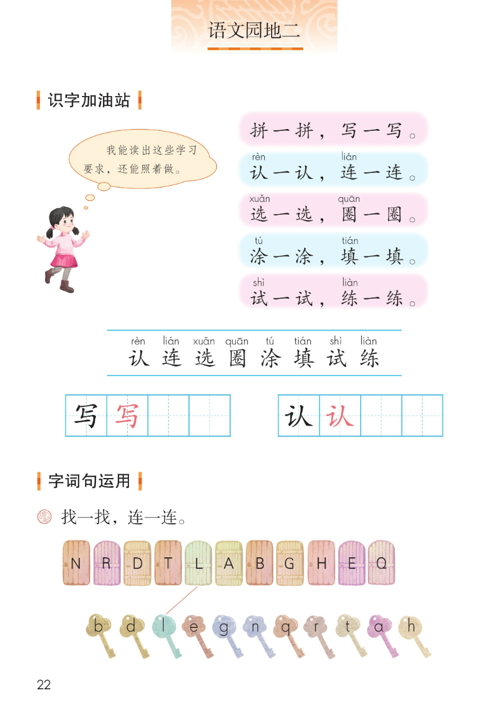
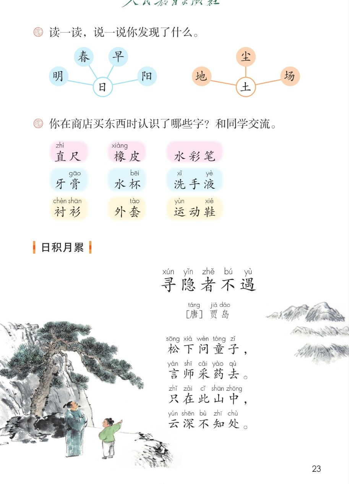
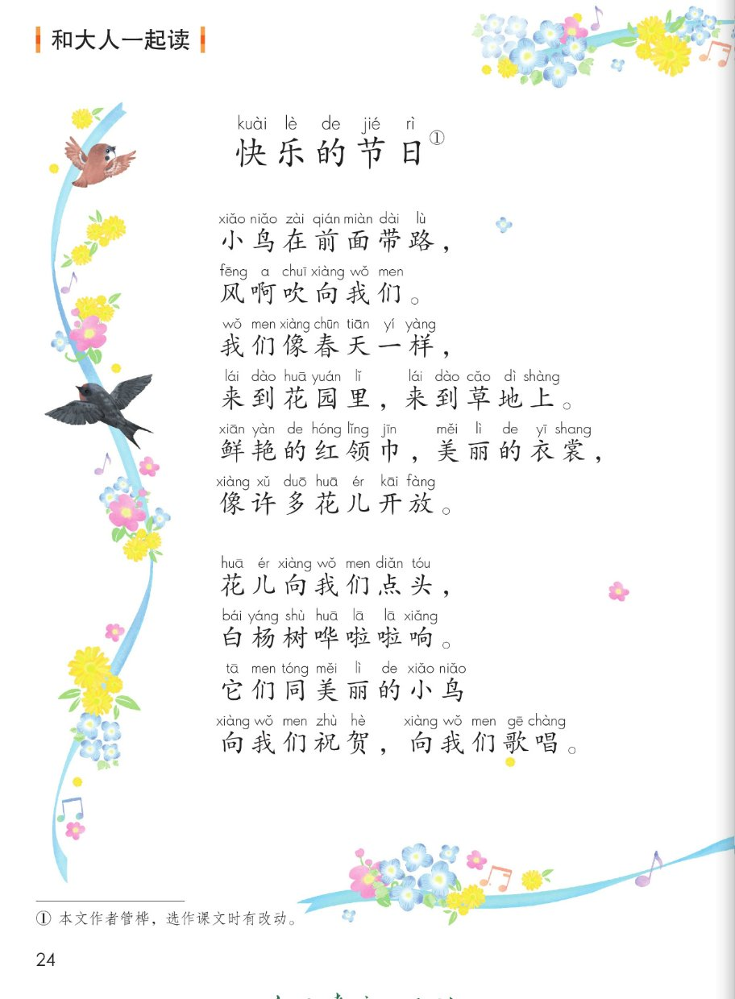
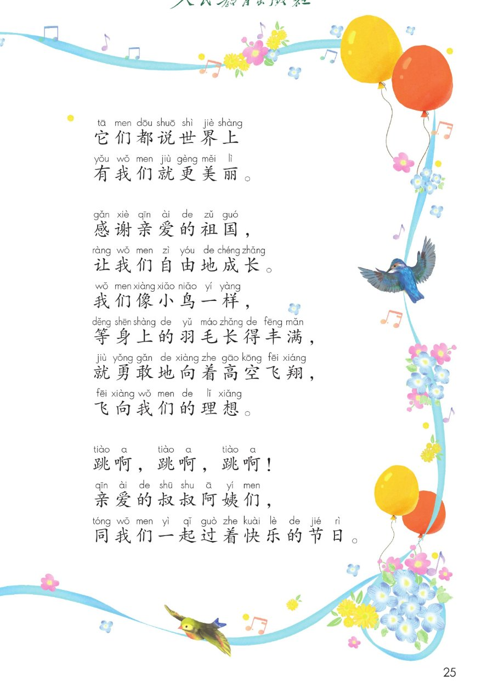

统编版 · 一年级下册 · 第二单元 · 语文园地二
语文园地二
识字加油站 · 字词句运用 · 展示台
日积月累 寻隐者不遇 · 和大人一起读 快乐的节日
五块活动点读听一听拼音可开关课本原页放大
这一页把语文园地二整块搬了上来：先认一认八个学习要求里的字（认、连、选、圈、涂、填、试、练），再把大小写字母一对一对连起来；接着在展示台里用偏旁归类、到商店招牌上认字；背一背唐诗《寻隐者不遇》；最后和爸爸妈妈一起读儿歌《快乐的节日》。🌿
① 识字加油站 课本第 22 页 点字、点词听一听
读一读下面的学习要求，再照着做：
田字格练写（课本第 22 页）：
课本气泡（照录）我能读出这些学习要求，还能照着做。
② 字词句运用 · 找一找，连一连 课本第 22 页 大小写字母一对一对连
↓ 与下面一行的小写字母配对
做一做（配套提示，供参考）：把上面一行的大写字母，和下面一行的小写字母一对一对连起来——N 连 n、R 连 r、D 连 d……连完读一读，说说你发现了什么。
③ 展示台 课本第 23 页 生活里识字 · 和同学交流
偏旁归类（课本照录：日——明、春、早、阳；土——地、尘、场）：
读一读，说一说你发现了什么。（课本第 23 页）
你在商店买东西时认识了哪些字？和同学交流。（课本第 23 页）
④ 日积月累 · 寻隐者不遇 课本第 23 页 点一句读一句，也可整页连读
寻隐者不遇 〔唐〕贾岛
松下问童子，
言师采药去。
只在此山中，
云深不知处。
⑤ 和大人一起读 · 快乐的节日 课本第 24~25 页 诗歌，点一句读一句
快乐的节日（作者 管桦）
小鸟在前面带路，
风啊吹向我们。
我们像春天一样，
来到花园里，来到草地上。
鲜艳的红领巾，美丽的衣裳，
像许多花儿开放。
花儿向我们点头，
白杨树哗啦啦响。
它们同美丽的小鸟
向我们祝贺，向我们歌唱。
它们都说世界上
有我们就更美丽。
感谢亲爱的祖国，
让我们自由地成长。
我们像小鸟一样，
等身上的羽毛长得丰满，
就勇敢地向着高空飞翔，
飞向我们的理想。
跳啊，跳啊，跳啊！
亲爱的叔叔阿姨们，
同我们一起过着快乐的节日。
① 本文作者管桦，选作课文时有改动。
课本原页 · 第 22~25 页
点图放大

第 22 页 · 识字加油站 / 字词句运用（大小写字母连线）

第 23 页 · 展示台（生活识字）/ 日积月累 寻隐者不遇

第 24 页 · 和大人一起读 快乐的节日（上）

第 25 页 · 快乐的节日（续）
教材原页截图照录；页面里的提示、分组与练习设计为配套内容，不冒充教材原文。